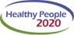

Resources
Access to a Better Tomorrow
Resources
ABT is interested in starting a Consumer Owned Care Cooperative, similar to one started in Vermont in 2012. If you are interested and live in the Gainesville area, and you are on a Medicaid Waiver and self-direct your personal support staff, contact us for more information.
5 Star Quality Accessibility Standards for Medical Diagnostic Equipment
The Department of Housing and Urban Development has an excellent FAQ on the rights of Persons with Disabilities under the Fair Housing Act. http://portal.hud.gov/hudportal/HUD?src=/topics/information_for_disabled_persons
We promote the expansion of accessible and affordable housing. Search for available accessible units through a database housed by SocialServe. http://www.socialserve.com/tenant/GA/index.html?type=rental
We are working with others for Respectability in Georgia, advocating for vocational assistance and paychecks instead of Social Security Checks for People with Disabilities, resulting in increased employment opportunities.
Disability Inclusion Raises Productivity
Inclusive Workplace Couples Efficiency with Opportunity More to link to the above
US DOT updates the Air Carrier Access Regulations
http://www.newmobility.com/2013/11/u-s-dot-updates-air-carrier-access-act-rules/
The United States Access Board has developed guidelines for Transportation Facilities, Vehicles, and Vessels that govern accessibility to these services that can be found here: http://www.access-board.gov/guidelines-and-standards/transportation
Georgia Resource Guide
Sport a Civil Right for Primary and Secondary School Students with Disabilities
http://usgovinfo.about.com/b/2013/01/31/sports-now-a-civil-right-for-persons-with-disabilities.htm
What are the laws regarding adaptive and accessible sports and recreation? (link to the following info)
The federal Americans with Disabilities Act (ADA) prohibits discrimination on the basis of disability. In Recreation Access Rights Under the ADA, the National Center on Accessibility outlines some of the rights created by the ADA with respect to sports and recreation:
- right to the most integrated setting: People with disabilities and those without disabilities should be able to participate in activities alongside each other to the maximum extent possible
- right to participate: People with disabilities should be able to take part in any type of activity available to people without disabilities, as long as all essential eligibility requirements are met
- right to reasonable accommodations including adaptive equipment: The provider of an activity must make reasonable adjustments to allow people with disabilities to participate
- right to an assessment or evaluation: People with disabilities should not be prohibited from an activity due to a perceived safety risk without an evaluation of actual risk after accommodations
Exceptions to the ADA rules can be made in three cases: if the accommodation costs too much; if the accommodation is too difficult to make; or if the accommodation fundamentally changes the nature of the activity.
The ADA rules apply to government facilities and programs, nonprofit organizations (such as YMCAs), and private organizations (such as health clubs and gyms). The only exempt organizations are private membership clubs and religious organizations.
National Organizations
- American Association of People with Disabilities – The American Association of People with Disabilities is the largest nonprofit, nonpartisan, cross-disability organization in the United States.
- The Association of Persons with Severe Handicaps – TASH's mission is to promote the full inclusion and participation of children and adults with significant disabilities in every aspect of their community, and to eliminate the social injustices that diminish human rights.
- Disabled American Veterans – the DAV is a national organization advocating on behalf of and assisting veterans with disabilities.
- The Association of Persons in Supported Employment
- Designing Accessible Communities – A nonprofit organization providing information and education about accessibility to people with disabilities and to professionals in the fields, of design, construction, code development and enforcement.
- Disability.gov – A one-stop interagency portal for information on Federal programs, services, and resources for people with disabilities, their families, employers, service providers, and other community members.
- Disability Resources, Inc. – A national nonprofit organization that provides information about resources for independent living.
- Disability Statistics Center produces and disseminates statistical information on disability and the status of people with disabilities in American society and establishes and monitors indicators of how conditions are changing over time to meet their health, housing, economic and social needs.
- Disability Rights Education and Defense Fund – DREDF is a national law and policy center dedicated to protecting and advancing the civil rights of people with disabilities through legislation, litigation, advocacy, technical assistance, and education and training of attorneys, advocates, persons with disabilities, and parents of children with disabilities.
- Easter Seals serves children and adults with disabilities, their families and communities through early intervention and child development services, vocational training and employment services, and physical medicine and rehabilitation. Easter Seals has more than 400 service sites across the country, including Washington, D.C., and Puerto Rico.
- The Inst. for Human Centered Design (formerly Adaptive Environments) promotes accessibility as well as universal design through education programs, technical assistance, training, consulting, publications and design advocacy. Its mission is to promote, facilitate, and advocate for international adoption of policies and designs that enable every individual, regardless of disability or age, to participate fully in all aspects of society.
- Institute on Independent Living – The Institute serves self-help organizations of disabled people who work for self-determination and equal opportunities; provides information, training materials and technical assistance on accessibility, personal assistance, advocacy, legislation and peer support; publishes articles, reports, manuals or comments and other materials related to Independent Living
- National Organization on Disabilities – NOD promotes the full and equal participation and contribution of America's 54 million men, women and children with disabilities in all aspects of life.
- National Parent Network on Disabilities
- National Assn. of Councils on Developmental Disabilities (NACDD)
- Paralyzed Veterans of America – PVA is a national advocacy organization representing veterans.
- United Cerebral Palsy Association UCP's mission is to advance the independence, productivity and full citizenship of people with cerebral palsy and other disabilities, through our commitment to the principles of independence, inclusion and self-determination.
- National Parent Network on Disabilities
- National Spinal Cord Injury Association provides active-lifestyle information, peer support and advocacy that empowers people living with spinal cord injuries and disorders (SCI/D) to achieve their highest potential.
- World Inst. on Disability – WID is an international public policy center dedicated to carrying out research on disability issues and overcoming obstacles to independent living.
Other Organizations & Informative Websites
- US Dept. of Health & Human Services
- Clara Martin Center
- National Rehabilitation Information Center
- National Organization for Rare Disorders
- US National Library of Medicine
- MEDLINEplus
- Family Empowerment Network: Down Syndrome
- Diabetes
- One-Stop Online Access to Federal Government Resources, Services and Information
- The United Way
- Kids Source Online
- Center for Development and Community Inclusion
Georgia Specific Resources